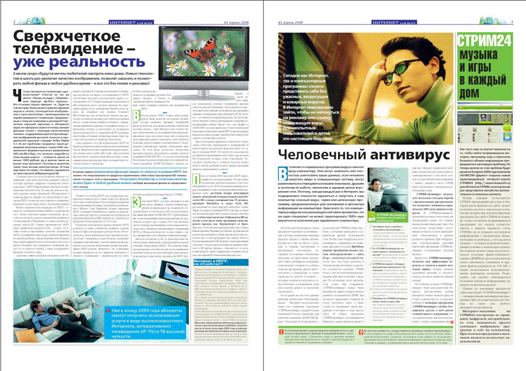
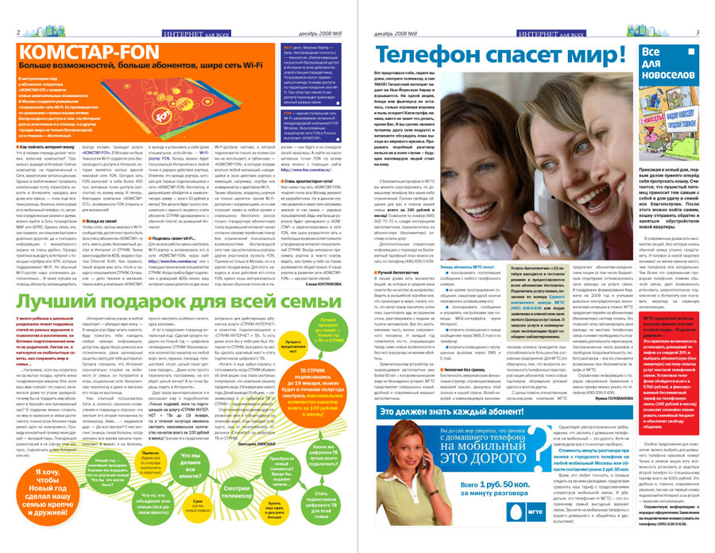
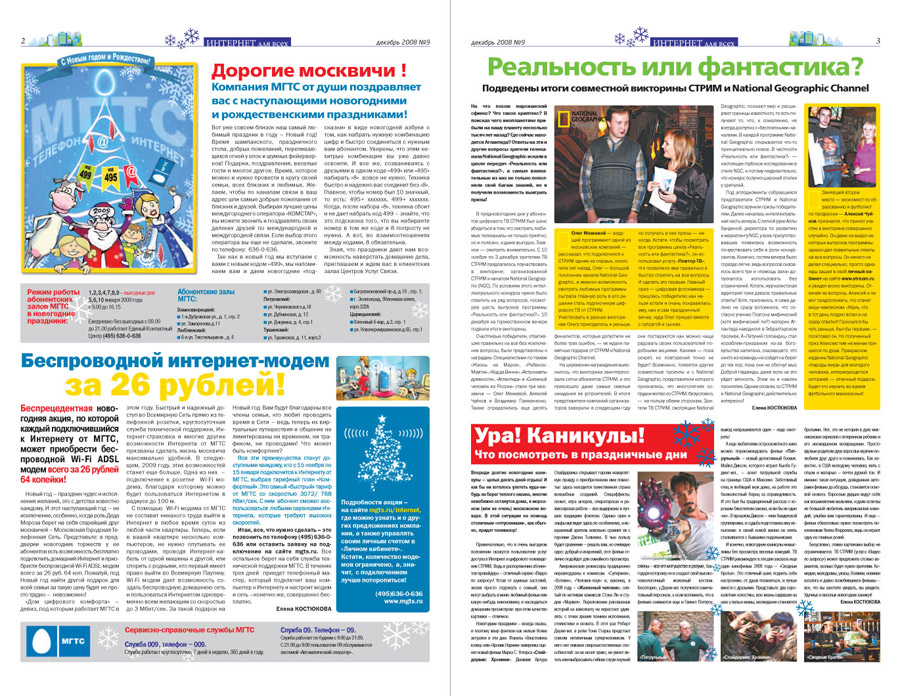

Интернет для всех
Цветная вкладка в газету АиФ
Тематическая вкладка (ежемесячно/ежеквартально) компании «Комстар-ОТС» в газету «Аргументы и Факты», освещающая деятельность «Комстар» в области современных телекоммуникационных услуг: фиксированной связи, кабельного ТВ, широкополосного доступа в Интернет и интерактивного цифрового телевидения (IP-TV).


